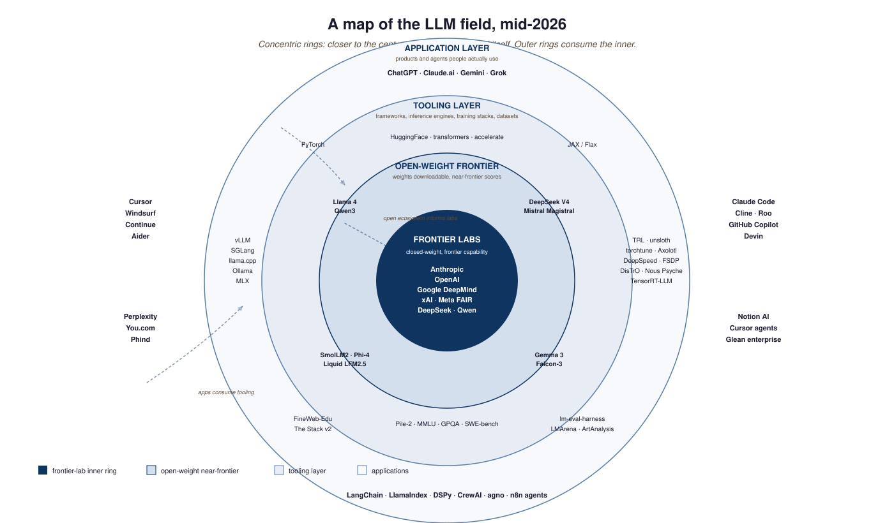

- Build a sustainable information diet of annual reports, newsletters, and lab channels with enough redundancy that no single closure breaks it.
- Pick the right community (Discord, X, conferences, regional meetups) for a given career stage and contribution goal.
- Update the reading list itself as the field evolves; treat the half-life of any tool list as roughly 18 months.
The specific tools listed in this book will mostly be obsolete within five years; the venues that publish the next list will mostly still be alive. This section identifies the latter: the annual-report, newsletter, lab-channel, and community spaces that have proven durable across the 2018-2026 reshuffles and should keep working through 2030.
If you assembled a "best LLM tools" list in 2022, half the items would be obsolete by 2024 and most by 2026. Hugging Face Transformers has held; almost everything else has churned. The right mental model is to maintain a meta-list (the venues that publish lists), not a list. The State of AI Report, Stanford AI Index, Epoch AI, and the lab research blogs will still be operating in 2030 with high probability; the specific Python packages, Discord servers, and Substack feeds you found this year mostly will not.
The half-life of any specific tool listed in this book is short; the venues below are the ones that should still be alive when you need to find the next list.

83.5.1 Durable venues, organized by category
In every active LLM community (EleutherAI Discord, the Hugging Face forums, specific subreddits, the LessWrong AI-alignment subforum, X / Twitter ML threads), the highest-signal posts come from people who spent at least a month reading before posting. The reverse pattern (post first, calibrate later) is the fastest way to be ignored. Lurk to learn the local norms, conventions, and what has already been answered. Then contribute by answering questions or sharing reproducible experiments rather than by posting opinions.
If you want to stay current, start with three primary sources rather than aggregators: the most recent Transformer Circuits issue for interpretability, the latest State of AI Report for trend data, and the current frontier-lab system card (Anthropic, OpenAI, or DeepMind) for the most recent capability disclosures.
- Maintain a meta-list (durable venues that publish lists), not a list of specific tools.
- State of AI Report, Stanford AI Index, Epoch AI, and lab research blogs are the durable anchors.
- Lurk first, contribute second: a month of reading is the table stakes for any active community.